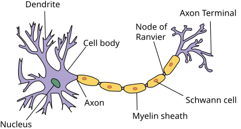

3.1. Régression linéaire¶
Les problèmes de régression surviennent chaque fois que nous voulons prédire une valeur numérique. Les exemples courants incluent la prédiction de prix (de maisons, d’actions, etc.), la prédiction de la durée de séjour (pour les patients à l’hôpital), la prévision de la demande (pour les ventes au détail), parmi de nombreux autres. Tous les problèmes de prédiction ne sont pas des problèmes de régression classique. Plus tard, nous introduirons des problèmes de classification, où l’objectif est de prédire l’appartenance à un ensemble de catégories.
Comme exemple fil rouge, supposons que nous souhaitions estimer le prix de maisons (en dollars) en fonction de leur superficie (en pieds carrés) et de leur âge (en années). Pour développer un modèle de prédiction du prix des maisons, nous avons besoin de données, notamment le prix de vente, la superficie et l’âge de chaque maison. Dans la terminologie de l’apprentissage automatique, le jeu de données est appelé un jeu de données d’entraînement ou ensemble d’entraînement, et chaque ligne (contenant les données correspondant à une vente) est appelée un exemple (ou point de données, instance, échantillon). La chose que nous essayons de prédire (le prix) est appelée une étiquette (ou cible). Les variables (âge et superficie) sur lesquelles reposent les prédictions sont appelées des caractéristiques (ou covariables).
3.1.1. Bases¶
La régression linéaire est à la fois l’outil le plus simple et le plus populaire parmi les outils standards pour aborder les problèmes de régression. Remontant à l’aube du XIXe siècle (), la régression linéaire découle de quelques hypothèses simples. Premièrement, nous supposons que la relation entre les caractéristiques \(\mathbf{x}\) et la cible \(y\) est approximativement linéaire, c’est-à-dire que l’espérance conditionnelle \(E[Y \mid X=\mathbf{x}]\) peut être exprimée comme une somme pondérée des caractéristiques \(\mathbf{x}\). Cette configuration permet que la valeur cible puisse encore s’écarter de sa valeur attendue en raison du bruit d’observation. Ensuite, nous pouvons imposer l’hypothèse que tout bruit de ce type est bien comporté, suivant une distribution gaussienne. Généralement, nous utiliserons \(n\) pour désigner le nombre d’exemples dans notre jeu de données. Nous utilisons des exposants pour énumérer les échantillons et les cibles, et des indices pour indexer les coordonnées. Plus concrètement, \(\mathbf{x}^{(i)}\) désigne le \(i^{\textrm{ème}}\) échantillon et \(x_j^{(i)}\) désigne sa \(j^{\textrm{ème}}\) coordonnée.
3.1.1.1. Modèle¶
Au cœur de chaque solution se trouve un modèle qui décrit comment les caractéristiques peuvent être transformées en une estimation de la cible. L’hypothèse de linéarité signifie que la valeur attendue de la cible (le prix) peut être exprimée comme une somme pondérée des caractéristiques (superficie et âge) :
Ici, \(w_{\textrm{area}}\) et \(w_{\textrm{age}}\) sont appelés des poids, et \(b\) est appelé un biais (ou décalage ou ordonnée à l’origine). Les poids déterminent l’influence de chaque caractéristique sur notre prédiction. Le biais détermine la valeur de l’estimation lorsque toutes les caractéristiques sont nulles. Même si nous ne verrons jamais de maisons neuves avec une superficie précisément nulle, nous avons toujours besoin du biais car il nous permet d’exprimer toutes les fonctions linéaires de nos caractéristiques (plutôt que de nous restreindre aux droites passant par l’origine). À proprement parler, (3.1.1) est une transformation affine des caractéristiques d’entrée, qui se caractérise par une transformation linéaire des caractéristiques via une somme pondérée, combinée à une translation via le biais ajouté. Étant donné un jeu de données, notre objectif est de choisir les poids \(\mathbf{w}\) et le biais \(b\) qui, en moyenne, font en sorte que les prédictions de notre modèle correspondent aux prix réels observés dans les données aussi étroitement que possible.
Dans les disciplines où il est courant de se concentrer sur des jeux de données comportant seulement quelques caractéristiques, exprimer explicitement les modèles sous leur forme longue, comme dans (3.1.1), est courant. Dans l’apprentissage automatique, nous travaillons généralement avec des jeux de données à haute dimension, où il est plus pratique d’employer la notation compacte de l’algèbre linéaire. Lorsque nos entrées sont constituées de \(d\) caractéristiques, nous pouvons assigner à chacune un indice (entre \(1\) et \(d\)) et exprimer notre prédiction \(\hat{y}\) (en général, le symbole “chapeau” désigne une estimation) comme
En rassemblant toutes les caractéristiques dans un vecteur \(\mathbf{x} \in \mathbb{R}^d\) et tous les poids dans un vecteur \(\mathbf{w} \in \mathbb{R}^d\), nous pouvons exprimer notre modèle de manière compacte via le produit scalaire entre \(\mathbf{w}\) et \(\mathbf{x}\) :
Dans (3.1.3), le vecteur \(\mathbf{x}\) correspond aux caractéristiques d’un seul exemple. Nous trouverons souvent pratique de nous référer aux caractéristiques de l’ensemble de notre jeu de données de \(n\) exemples via la matrice de conception \(\mathbf{X} \in \mathbb{R}^{n \times d}\). Ici, \(\mathbf{X}\) contient une ligne pour chaque exemple et une colonne pour chaque caractéristique. Pour une collection de caractéristiques \(\mathbf{X}\), les prédictions \(\hat{\mathbf{y}} \in \mathbb{R}^n\) peuvent être exprimées via le produit matrice-vecteur :
où la diffusion (Section 2.1.4) est appliquée lors de la sommation. Étant donné les caractéristiques d’un jeu de données d’entraînement \(\mathbf{X}\) et les étiquettes correspondantes (connues) \(\mathbf{y}\), l’objectif de la régression linéaire est de trouver le vecteur de poids \(\mathbf{w}\) et le terme de biais \(b\) tels que, étant donné les caractéristiques d’un nouvel exemple de données échantillonné à partir de la même distribution que \(\mathbf{X}\), l’étiquette du nouvel exemple sera (en espérance) prédite avec l’erreur la plus faible.
Même si nous pensons que le meilleur modèle pour prédire \(y\) étant donné \(\mathbf{x}\) est linéaire, nous ne nous attendrions pas à trouver un jeu de données réel de \(n\) exemples où \(y^{(i)}\) est exactement égal à \(\mathbf{w}^\top \mathbf{x}^{(i)}+b\) pour tout \(1 \leq i \leq n\). Par exemple, quels que soient les instruments que nous utilisons pour observer les caractéristiques \(\mathbf{X}\) et les étiquettes \(\mathbf{y}\), il peut y avoir une petite quantité d’erreur de mesure. Ainsi, même lorsque nous sommes convaincus que la relation sous-jacente est linéaire, nous incorporerons un terme de bruit pour tenir compte de ces erreurs.
Avant de pouvoir chercher les meilleurs paramètres (ou paramètres du modèle) \(\mathbf{w}\) et \(b\), nous aurons besoin de deux choses supplémentaires : (i) une mesure de la qualité d’un modèle donné ; et (ii) une procédure de mise à jour du modèle pour améliorer sa qualité.
3.1.1.2. Fonction de perte¶
Naturellement, l’ajustement de notre modèle aux données exige que nous nous accordions sur une mesure de l’adéquation (ou, de manière équivalente, de l’inadéquation). Les fonctions de perte quantifient la distance entre les valeurs réelles et prédites de la cible. La perte sera généralement un nombre non négatif où des valeurs plus petites sont meilleures et des prédictions parfaites entraînent une perte de 0. Pour les problèmes de régression, la fonction de perte la plus courante est l’erreur quadratique. Lorsque notre prédiction pour un exemple \(i\) est \(\hat{y}^{(i)}\) et que l’étiquette réelle correspondante est \(y^{(i)}\), l’erreur quadratique est donnée par :
La constante \(\frac{1}{2}\) ne fait aucune réelle différence mais s’avère pratique pour la notation, puisqu’elle s’annule lorsque nous prenons la dérivée de la perte. Parce que le jeu de données d’entraînement nous est donné, et qu’il échappe donc à notre contrôle, l’erreur empirique n’est qu’une fonction des paramètres du modèle. Dans la Fig. 3.1.1, nous visualisons l’ajustement d’un modèle de régression linéaire dans un problème avec des entrées unidimensionnelles.

Fig. 3.1.1 Ajustement d’un modèle de régression linéaire à des données unidimensionnelles.¶
Notez que de grandes différences entre les estimations \(\hat{y}^{(i)}\) et les cibles \(y^{(i)}\) entraînent des contributions encore plus importantes à la perte, en raison de sa forme quadratique (cette quadraticité peut être une épée à double tranchant ; bien qu’elle encourage le modèle à éviter les erreurs importantes, elle peut également entraîner une sensibilité excessive aux données anormales). Pour mesurer la qualité d’un modèle sur l’ensemble du jeu de données de \(n\) exemples, nous calculons simplement la moyenne (ou, de manière équivalente, la somme) des pertes sur l’ensemble d’entraînement :
Lors de l’entraînement du modèle, nous cherchons les paramètres (\(\mathbf{w}^*, b^*\)) qui minimisent la perte totale sur tous les exemples d’entraînement :
3.1.1.3. Solution analytique¶
Contrairement à la plupart des modèles que nous aborderons, la régression linéaire nous présente un problème d’optimisation étonnamment facile. En particulier, nous pouvons trouver les paramètres optimaux (tels qu’évalués sur les données d’entraînement) analytiquement en appliquant une formule simple comme suit. Premièrement, nous pouvons intégrer le biais \(b\) dans le paramètre \(\mathbf{w}\) en ajoutant une colonne à la matrice de conception composée uniquement de 1. Notre problème de prédiction consiste alors à minimiser \(\|\mathbf{y} - \mathbf{X}\mathbf{w}\|^2\). Tant que la matrice de conception \(\mathbf{X}\) est de plein rang (aucune caractéristique n’est linéairement dépendante des autres), il n’y aura qu’un seul point critique sur la surface de perte et il correspond au minimum de la perte sur l’ensemble du domaine. En prenant la dérivée de la perte par rapport à \(\mathbf{w}\) et en l’égalisant à zéro, on obtient :
La résolution pour \(\mathbf{w}\) nous fournit la solution optimale pour le problème d’optimisation. Notez que cette solution
ne sera unique que lorsque la matrice \(\mathbf X^\top \mathbf X\) est inversible, c’est-à-dire lorsque les colonnes de la matrice de conception sont linéairement indépendantes ().
Bien que des problèmes simples comme la régression linéaire puissent admettre des solutions analytiques, vous ne devriez pas vous habituer à une telle chance. Bien que les solutions analytiques permettent une belle analyse mathématique, l’exigence d’une solution analytique est si restrictive qu’elle exclurait presque tous les aspects passionnants de l’apprentissage profond.
3.1.1.4. Descente de gradient stochastique par mini-lots¶
Heureusement, même dans les cas où nous ne pouvons pas résoudre les modèles analytiquement, nous pouvons encore souvent entraîner les modèles efficacement en pratique. De plus, pour de nombreuses tâches, ces modèles difficiles à optimiser s’avèrent tellement meilleurs que comprendre comment les entraîner finit par en valoir largement la peine.
La technique clé pour optimiser presque tous les modèles d’apprentissage profond, et à laquelle nous ferons appel tout au long de ce livre, consiste à réduire itérativement l’erreur en mettant à jour les paramètres dans la direction qui diminue progressivement la fonction de perte. Cet algorithme est appelé la descente de gradient.
L’application la plus naïve de la descente de gradient consiste à prendre la dérivée de la fonction de perte, qui est une moyenne des pertes calculées sur chaque exemple du jeu de données. En pratique, cela peut être extrêmement lent : nous devons parcourir l’ensemble du jeu de données avant d’effectuer une seule mise à jour, même si les étapes de mise à jour peuvent être très puissantes (). Pire encore, s’il y a beaucoup de redondance dans les données d’entraînement, le bénéfice d’une mise à jour complète est limité.
L’autre extrême consiste à ne considérer qu’un seul exemple à la fois et
à effectuer des étapes de mise à jour basées sur une seule observation à
la fois. L’algorithme résultant, la descente de gradient stochastique
(SGD), peut être une stratégie efficace (), même pour
de grands jeux de données. Malheureusement, la SGD présente des
inconvénients, tant informatiques que statistiques. Un problème vient du
fait que les processeurs sont beaucoup plus rapides pour multiplier et
additionner des nombres qu’ils ne le sont pour déplacer des données de
la mémoire principale vers le cache du processeur. Il est jusqu’à un
ordre de grandeur plus efficace d’effectuer une multiplication
matrice-vecteur qu’un nombre correspondant d’opérations vecteur-vecteur.
Cela signifie que le traitement d’un échantillon à la fois peut prendre
beaucoup plus de temps qu’un lot complet. Un second problème est que
certaines couches, telles que la normalisation par lots (qui sera
décrite dans la sec_batch_norm), ne fonctionnent bien que
lorsque nous avons accès à plus d’une observation à la fois.
La solution aux deux problèmes est de choisir une stratégie intermédiaire : plutôt que de prendre un lot complet ou un seul échantillon à la fois, nous prenons un mini-lot d’observations (). Le choix spécifique de la taille dudit mini-lot dépend de nombreux facteurs, tels que la quantité de mémoire, le nombre d’accélérateurs, le choix des couches et la taille totale du jeu de données. Malgré tout cela, un nombre compris entre 32 et 256, de préférence un multiple d’une grande puissance de \(2\), est un bon début. Cela nous amène à la descente de gradient stochastique par mini-lots.
Dans sa forme la plus basique, à chaque itération \(t\), nous échantillonnons d’abord au hasard un mini-lot \(\mathcal{B}_t\) composé d’un nombre fixe \(|\mathcal{B}|\) d’exemples d’entraînement. Nous calculons ensuite la dérivée (gradient) de la perte moyenne sur le mini-lot par rapport aux paramètres du modèle. Enfin, nous multiplions le gradient par une petite valeur positive prédéterminée \(\eta\), appelée le taux d’apprentissage, et soustrayons le terme résultant des valeurs actuelles des paramètres. Nous pouvons exprimer la mise à jour comme suit :
En résumé, la SGD par mini-lots procède comme suit : (i) initialiser les valeurs des paramètres du modèle, généralement au hasard ; (ii) échantillonner de manière itérative des mini-lots aléatoires à partir des données, en mettant à jour les paramètres dans la direction du gradient négatif. Pour les pertes quadratiques et les transformations affines, cela a un développement analytique :
Puisque nous choisissons un mini-lot \(\mathcal{B}\), nous devons normaliser par sa taille \(|\mathcal{B}|\). Fréquemment, la taille du mini-lot et le taux d’apprentissage sont définis par l’utilisateur. Ces paramètres ajustables qui ne sont pas mis à jour dans la boucle d’entraînement sont appelés hyperparamètres. Ils peuvent être réglés automatiquement par un certain nombre de techniques, telles que l’optimisation bayésienne (). En fin de compte, la qualité de la solution est généralement évaluée sur un jeu de données de validation (ou ensemble de validation) séparé.
Après un entraînement pendant un nombre prédéterminé d’itérations (ou jusqu’à ce qu’un autre critère d’arrêt soit rempli), nous enregistrons les paramètres estimés du modèle, notés \(\hat{\mathbf{w}}, \hat{b}\). Notez que même si notre fonction est véritablement linéaire et sans bruit, ces paramètres ne seront pas les minimiseurs exacts de la perte, ni même déterministes. Bien que l’algorithme converge lentement vers les minimiseurs, il ne les trouvera généralement pas exactement en un nombre fini d’étapes. De plus, les mini-lots \(\mathcal{B}\) utilisés pour mettre à jour les paramètres sont choisis au hasard. Cela brise le déterminisme.
La régression linéaire se trouve être un problème d’apprentissage avec un minimum global (chaque fois que \(\mathbf{X}\) est de plein rang, ou de manière équivalente, chaque fois que \(\mathbf{X}^\top \mathbf{X}\) est inversible). Cependant, les surfaces de perte pour les réseaux profonds contiennent de nombreux points de selle et minima. Heureusement, nous ne nous soucions généralement pas de trouver un ensemble exact de paramètres, mais simplement n’importe quel ensemble de paramètres qui conduit à des prédictions précises (et donc à une faible perte). En pratique, les praticiens de l’apprentissage profond luttent rarement pour trouver des paramètres qui minimisent la perte sur les jeux d’entraînement (). La tâche la plus redoutable est de trouver des paramètres qui conduisent à des prédictions précises sur des données jamais vues auparavant, un défi appelé la généralisation. Nous reviendrons sur ces sujets tout au long du livre.
3.1.1.5. Prédictions¶
Étant donné le modèle \(\hat{\mathbf{w}}^\top \mathbf{x} + \hat{b}\), nous pouvons maintenant faire des prédictions pour un nouvel exemple, par exemple, prédire le prix de vente d’une maison jamais vue auparavant étant donné sa superficie \(x_1\) et son âge \(x_2\). Les praticiens de l’apprentissage profond ont pris l’habitude d’appeler la phase de prédiction inférence, mais c’est un peu un abus de langage : l’inférence se réfère largement à toute conclusion tirée sur la base de preuves, incluant à la fois les valeurs des paramètres et l’étiquette probable pour une instance non vue. Au contraire, dans la littérature statistique, l’inférence désigne plus souvent l’inférence de paramètres et cette surcharge terminologique crée une confusion inutile lorsque les praticiens de l’apprentissage profond discutent avec des statisticiens. Dans la suite, nous nous en tiendrons à prédiction chaque fois que possible.
3.1.2. Vectorisation pour la rapidité¶
Lors de l’entraînement de nos modèles, nous voulons généralement traiter des mini-lots entiers d’exemples simultanément. Pour le faire efficacement, nous devons vectoriser les calculs et exploiter des bibliothèques d’algèbre linéaire rapides plutôt que d’écrire des boucles for coûteuses en Python.
Pour comprendre pourquoi cela importe tant, considérons deux méthodes
pour additionner des vecteurs. Pour commencer, nous instancions deux
vecteurs de dimension 10 000 contenant uniquement des 1. Dans la
première méthode, nous parcourons les vecteurs avec une boucle for
Python. Dans la seconde, nous nous appuyons sur un seul appel à +.
n = 10000
a = d2l.ones(n)
b = d2l.ones(n)
Maintenant, nous pouvons évaluer les performances des charges de travail. Tout d’abord, nous les additionnons, une coordonnée à la fois, en utilisant une boucle for.
Alternativement, nous nous appuyons sur l’opérateur + surchargé pour
calculer la somme élément par élément.
t = time.time()
d = a + b
f'{time.time() - t:.5f} sec'
La seconde méthode est considérablement plus rapide que la première. La vectorisation du code permet souvent des gains de vitesse d’un ordre de grandeur. De plus, nous déléguons davantage de mathématiques à la bibliothèque, de sorte que nous n’avons pas à écrire autant de calculs nous-mêmes, ce qui réduit le risque d’erreurs et augmente la portabilité du code.
3.1.3. La distribution normale et la perte quadratique¶
Jusqu’à présent, nous avons donné une motivation assez fonctionnelle de l’objectif de perte quadratique : les paramètres optimaux renvoient l’espérance conditionnelle \(E[Y\mid X]\) chaque fois que le modèle sous-jacent est véritablement linéaire, et la perte assigne des pénalités importantes pour les valeurs aberrantes. Nous pouvons également fournir une motivation plus formelle pour l’objectif de perte quadratique en faisant des hypothèses probabilistes sur la distribution du bruit.
La régression linéaire a été inventée au tournant du XIXe siècle. Alors qu’on a longtemps débattu pour savoir si Gauss ou Legendre avait le premier imaginé l’idée, c’est Gauss qui a également découvert la distribution normale (également appelée gaussienne). Il s’avère que la distribution normale et la régression linéaire avec perte quadratique partagent un lien plus profond qu’une parenté commune.
Pour commencer, rappelons qu’une distribution normale de moyenne \(\mu\) et de variance \(\sigma^2\) (écart-type \(\sigma\)) est donnée par
Ci-dessous, nous définissons une fonction pour calculer la distribution normale.
def normal(x, mu, sigma):
p = 1 / math.sqrt(2 * math.pi * sigma**2)
Nous pouvons maintenant visualiser les distributions normales.
Notez que le changement de la moyenne correspond à un décalage le long de l’axe des \(x\), et que l’augmentation de la variance étale la distribution, abaissant son sommet.
Une façon de motiver la régression linéaire avec la perte quadratique est de supposer que les observations proviennent de mesures bruitées, où le bruit \(\epsilon\) suit la distribution normale \(\mathcal{N}(0, \sigma^2)\) :
Ainsi, nous pouvons maintenant écrire la vraisemblance de voir un \(y\) particulier pour un \(\mathbf{x}\) donné via
En tant que telle, la vraisemblance se factorise. Selon le principe du maximum de vraisemblance, les meilleures valeurs des paramètres \(\mathbf{w}\) et \(b\) sont celles qui maximisent la vraisemblance de l’ensemble du jeu de données :
L’égalité suit puisque toutes les paires \((\mathbf{x}^{(i)}, y^{(i)})\) ont été tirées indépendamment les unes des autres. Les estimateurs choisis selon le principe du maximum de vraisemblance sont appelés estimateurs du maximum de vraisemblance. Bien que maximiser le produit de nombreuses fonctions exponentielles puisse paraître difficile, nous pouvons simplifier considérablement les choses, sans changer l’objectif, en maximisant le logarithme de la vraisemblance à la place. Pour des raisons historiques, les optimisations sont plus souvent exprimées comme une minimisation plutôt qu’une maximisation. Ainsi, sans rien changer, nous pouvons minimiser la log-vraisemblance négative, que nous pouvons exprimer comme suit :
Si nous supposons que \(\sigma\) est fixe, nous pouvons ignorer le premier terme, car il ne dépend pas de \(\mathbf{w}\) ni de \(b\). Le second terme est identique à la perte par erreur quadratique introduite précédemment, à l’exception de la constante multiplicative \(\frac{1}{\sigma^2}\). Heureusement, la solution ne dépend pas non plus de \(\sigma\). Il s’ensuit que la minimisation de l’erreur quadratique moyenne est équivalente à l’estimation du maximum de vraisemblance d’un modèle linéaire sous l’hypothèse d’un bruit gaussien additif.
3.1.4. La régression linéaire comme un réseau de neurones¶
Bien que les modèles linéaires ne soient pas suffisamment riches pour exprimer les nombreux réseaux complexes que nous introduirons dans ce livre, les réseaux de neurones (artificiels) sont suffisamment riches pour inclure les modèles linéaires comme des réseaux dans lesquels chaque caractéristique est représentée par un neurone d’entrée, lesquels sont tous connectés directement à la sortie.
La Fig. 3.1.2 illustre la régression linéaire en tant que réseau de neurones. Le diagramme met en évidence le schéma de connectivité, comme la façon dont chaque entrée est connectée à la sortie, mais pas les valeurs spécifiques prises par les poids ou les biais.

Fig. 3.1.2 La régression linéaire est un réseau de neurones à une seule couche.¶
Les entrées sont \(x_1, \ldots, x_d\). Nous appelons \(d\) le nombre d’entrées ou la dimensionnalité des caractéristiques dans la couche d’entrée. La sortie du réseau est \(o_1\). Comme nous essayons simplement de prédire une seule valeur numérique, nous n’avons qu’un seul neurone de sortie. Notez que les valeurs d’entrée sont toutes données. Il n’y a qu’un seul neurone calculé. In résumé, nous pouvons considérer la régression linéaire comme un réseau de neurones entièrement connecté à une seule couche. Nous rencontrerons des réseaux avec beaucoup plus de couches dans les chapitres suivants.
3.1.4.1. Biologie¶
Parce que la régression linéaire précède les neurosciences computationnelles, il peut sembler anachronique de décrire la régression linéaire en termes de réseaux de neurones. Néanmoins, ils constituaient un point de départ naturel lorsque les cybernéticiens et neurophysiologistes Warren McCulloch et Walter Pitts ont commencé à développer des modèles de neurones artificiels. Considérez l’image schématique d’un neurone biologique dans la Fig. 3.1.3, composé de dendrites (terminaisons d’entrée), du noyau (processeur), de l’axone (fil de sortie) et des terminaisons axonales (terminaisons de sortie), permettant des connexions avec d’autres neurones via des synapses.

Fig. 3.1.3 Le vrai neurone (source : “Anatomy and Physiology” par le programme Surveillance, Epidemiology and End Results (SEER) de l’Institut national du cancer des États-Unis).¶
L’information \(x_i\) arrivant d’autres neurones (ou de capteurs environnementaux) est reçue dans les dendrites. En particulier, cette information est pondérée par des poids synaptiques \(w_i\), déterminant l’effet des entrées, par exemple, l’activation ou l’inhibition via le produit \(x_i w_i\). Les entrées pondérées arrivant de multiples sources sont agrégées dans le noyau sous forme d’une somme pondérée \(y = \sum_i x_i w_i + b\), éventuellement soumise à un post-traitement non linéaire via une fonction \(\sigma(y)\). Cette information est ensuite envoyée via l’axone aux terminaisons axonales, où elle atteint sa destination (par exemple, un actionneur tel qu’un muscle) ou est transmise à un autre neurone via ses dendrites.
Certes, l’idée de haut niveau selon laquelle de nombreuses unités de ce type pourraient être combinées, à condition d’avoir la connectivité et l’algorithme d’apprentissage appropriés, pour produire un comportement beaucoup plus intéressant et complexe que ce qu’un seul neurone pourrait exprimer, provient de notre étude des systèmes neuronaux biologiques réels. Dans le même temps, la plupart des recherches en apprentissage profond aujourd’hui puisent leur inspiration dans une source beaucoup plus large. Nous invoquons qui a souligné que même si les avions ont pu être inspirés par les oiseaux, l’ornithologie n’a pas été le principal moteur de l’innovation aéronautique depuis quelques siècles. De même, l’inspiration dans l’apprentissage profond de nos jours vient dans une mesure égale ou supérieure des mathématiques, de la linguistique, de la psychologie, des statistiques, de l’informatique et de bien d’autres domaines.
3.1.5. Résumé¶
Dans cette section, nous avons présenté la régression linéaire traditionnelle, où les paramètres d’une fonction linéaire sont choisis pour minimiser la perte quadratique sur le jeu d’entraînement. Nous avons également motivé ce choix d’objectif à la fois par des considérations pratiques et par une interprétation de la régression linéaire comme une estimation du maximum de vraisemblance sous une hypothèse de linéarité et de bruit gaussien. Après avoir discuté des considérations computationnelles et des liens avec les statistiques, nous avons montré comment de tels modèles linéaires pouvaient être exprimés sous forme de réseaux de neurones simples où les entrées sont directement reliées à la ou aux sorties. Bien que nous allions bientôt dépasser les modèles linéaires, ils sont suffisants pour introduire la plupart des composants exigés par tous nos modèles : formes paramétriques, objectifs dérivables, optimisation via la descente de gradient stochastique par mini-lots, et enfin, évaluation sur des données jamais vues auparavant.
3.1.6. Exercices¶
Supposons que nous ayons des données \(x_1, \ldots, x_n \in \mathbb{R}\). Notre objectif est de trouver une constante \(b\) telle que \(\sum_i (x_i - b)^2\) soit minimisée.
Trouvez une solution analytique pour la valeur optimale de \(b\).
Comment ce problème et sa solution se rapportent-ils à la distribution normale ?
Que se passe-t-il si nous changeons la perte de \(\sum_i (x_i - b)^2\) à \(\sum_i |x_i-b|\) ? Pouvez-vous trouver la solution optimale pour \(b\) ?
Prouvez que les fonctions affines qui peuvent être exprimées par \(\mathbf{x}^\top \mathbf{w} + b\) sont équivalentes aux fonctions linéaires sur \((\mathbf{x}, 1)\).
Supposons que vous vouliez trouver des fonctions quadratiques de \(\mathbf{x}\), c’est-à-dire \(f(\mathbf{x}) = b + \sum_i w_i x_i + \sum_{j \leq i} w_{ij} x_{i} x_{j}\). Comment formuleriez-vous cela dans un réseau profond ?
Rappelons que l’une des conditions pour que le problème de régression linéaire soit soluble était que la matrice de conception \(\mathbf{X}^\top \mathbf{X}\) soit de plein rang.
Que se passe-t-il si ce n’est pas le cas ?
Comment pourriez-vous y remédier ? Que se passe-t-il si vous ajoutez une petite quantité de bruit gaussien indépendant par coordonnée à toutes les entrées de \(\mathbf{X}\) ?
Quelle est l’espérance de la matrice de conception \(\mathbf{X}^\top \mathbf{X}\) dans ce cas ?
Que se passe-t-il avec la descente de gradient stochastique lorsque \(\mathbf{X}^\top \mathbf{X}\) n’est pas de plein rang ?
Supposons que le modèle de bruit régissant le bruit additif \(\epsilon\) soit la distribution exponentielle. C’est-à-dire \(p(\epsilon) = \frac{1}{2} \exp(-|\epsilon|)\).
Écrivez la log-vraisemblance négative des données sous le modèle \(-\log P(\mathbf y \mid \mathbf X)\).
Pouvez-vous trouver une solution de forme analytique ?
Suggérez un algorithme de descente de gradient stochastique par mini-lots pour résoudre ce problème. Qu’est-ce qui pourrait mal se passer (indice : que se passe-t-il près du point stationnaire alors que nous continuons à mettre à jour les paramètres) ? Pouvez-vous corriger cela ?
Supposons que nous voulions concevoir un réseau de neurones à deux couches en composant deux couches linéaires. C’est-à-dire que la sortie de la première couche devient l’entrée de la seconde. Pourquoi une telle composition naïve ne fonctionnerait-elle pas ?
Que se passe-t-il si vous voulez utiliser la régression pour une estimation réaliste du prix de maisons ou du cours d’actions ?
Montrez que l’hypothèse de bruit gaussien additif n’est pas appropriée. Indice : peut-on avoir des prix négatifs ? Qu’en est-il des fluctuations ?
Pourquoi la régression sur le logarithme du prix serait-elle bien meilleure, c’est-à-dire \(y = \log \textrm{price}\) ?
De quoi devez-vous vous soucier lorsque vous traitez des “pennystocks”, c’est-à-dire des actions avec des prix très bas ? Indice : pouvez-vous échanger à tous les prix possibles ? Pourquoi est-ce un problème plus important pour les actions bon marché ? Pour plus d’informations, consultez le célèbre modèle Black-Scholes pour l’évaluation des options ().
Supposons que nous voulions utiliser la régression pour estimer le nombre de pommes vendues dans une épicerie.
Quels sont les problèmes avec un modèle de bruit additif gaussien ? Indice : vous vendez des pommes, pas du pétrole.
La distribution de Poisson capture les distributions sur les décomptes. Elle est donnée par \(p(k \mid \lambda) = \lambda^k e^{-\lambda}/k!\). Ici \(\lambda\) est la fonction de taux et \(k\) est le nombre d’événements que vous observez. Prouvez que \(\lambda\) est l’espérance des décomptes \(k\).
Concevez une fonction de perte associée à la distribution de Poisson.
Concevez une fonction de perte pour estimer \(\log \lambda\) à la place.